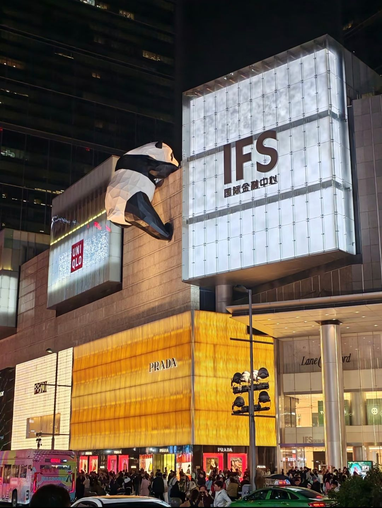
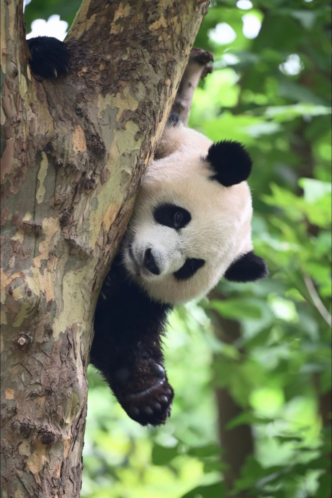
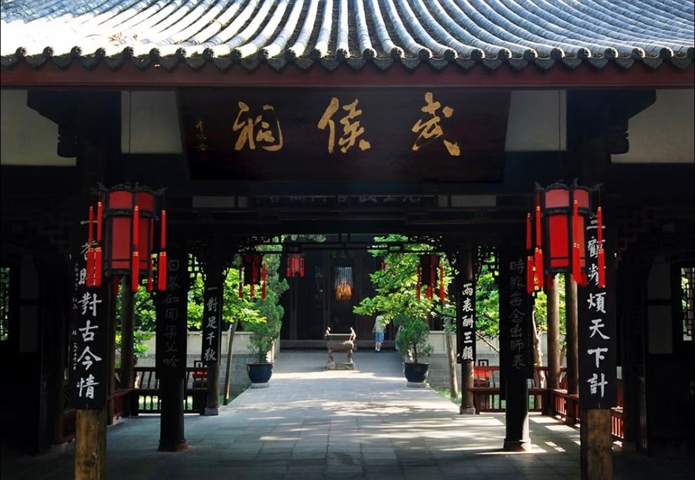
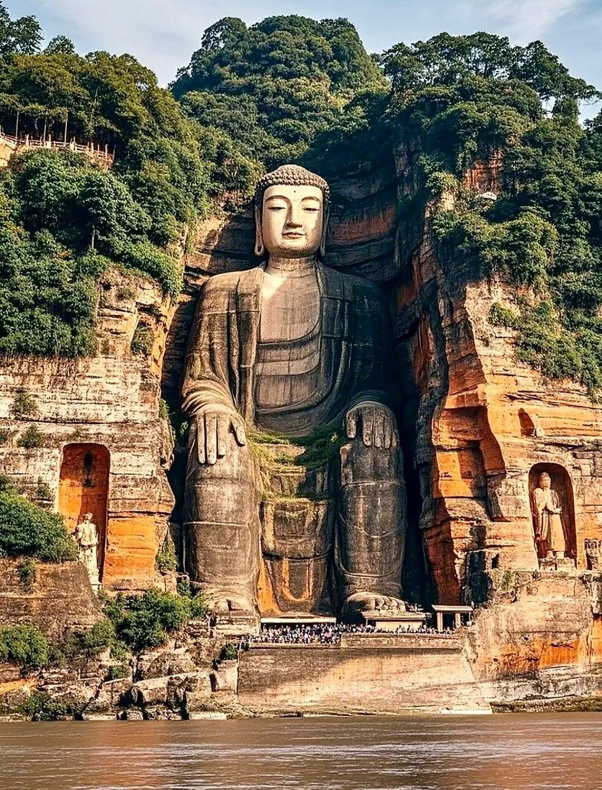
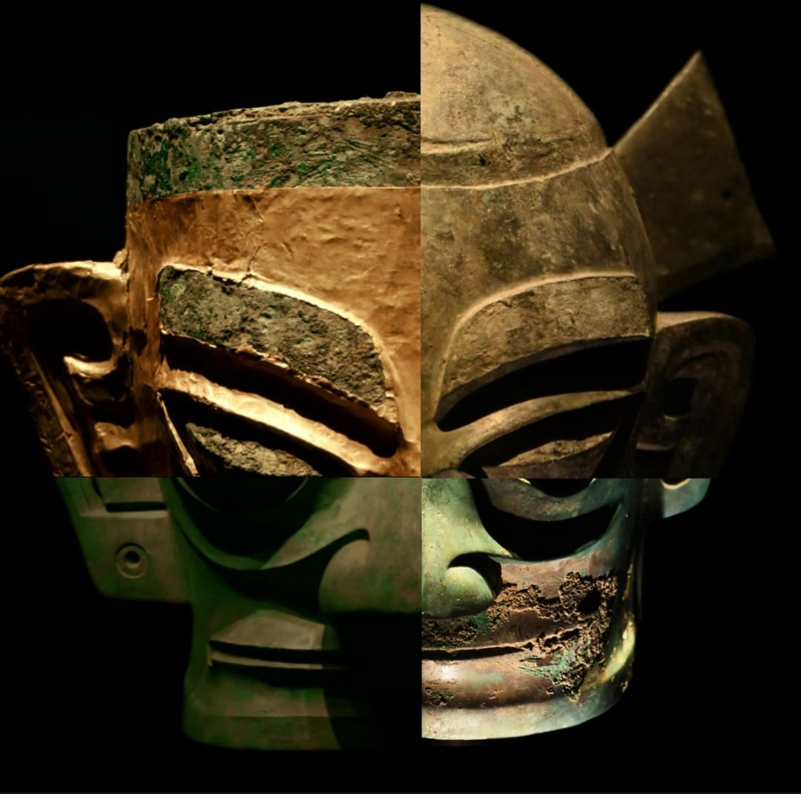
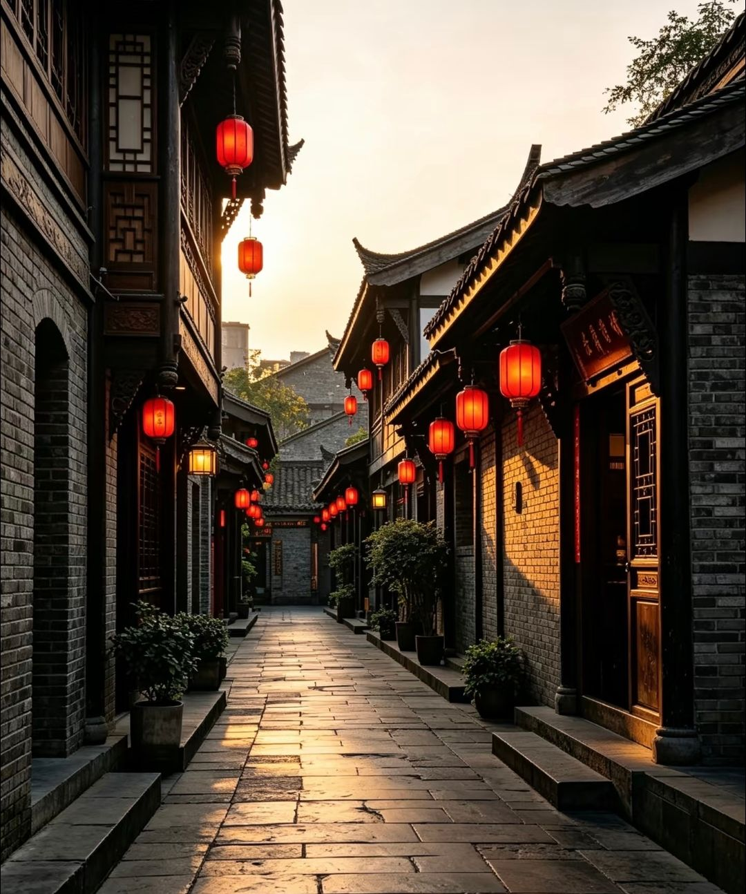
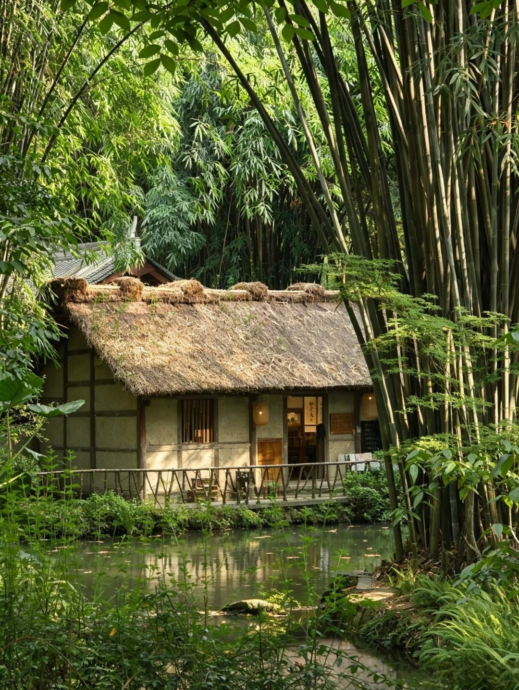

寻古蜀文脉，品天府滋味｜用更舒展的方式，打开成都的慢生活与烟火气。

成都最具辨识度的城市符号，也是太古里商圈热门打卡位。






一个看萌态国宝，一个看蓉城夜色。
来成都，熊猫基地是很多人的第一站。建议早上入园，熊猫更活跃，游览体验也更好。这里适合慢逛，不建议赶时间打卡。
九眼桥是成都夜生活的代表之一。夜晚灯光映在河面，城市氛围感很强，适合饭后散步、拍照和感受蓉城夜景。
从古巷烟火到夜色阑珊，用脚步慢慢读懂成都。
红墙夹道，翠竹掩映，全国唯一君臣合祀祠庙。建议提前预约，慢慢逛感受三国文化。
诗圣故居，竹林流水，环境清幽，适合安静散步和阅读成都的诗意。
老成都院落街巷，青瓦灰墙，适合慢逛拍照，感受蓉城烟火气。
大佛、古蜀、青城，用一天时间感受成都之外的蜀地精华。
成都高铁约1小时直达，看71米大佛，打卡张公桥美食街，跷脚牛肉、甜皮鸭必吃！
广汉高铁20分钟，神秘青铜面具，周一闭馆！一定要提前线上预约。
"青城天下幽"，道教名山，森林茂密适合吸氧爬山。
点击街区卡片，可直接打开地图导航。
用三天时间，把成都的经典景点和烟火味串起来。
Day1：熊猫基地 → 文殊院 → 人民公园喝茶 → 奎星楼街吃晚饭
Day2：杜甫草堂 → 武侯祠 → 锦里夜游
Day3：春熙路、太古里 → 望平街 → 九眼桥夜景
路线A：青城山休闲爬山
路线B：乐山一日游（看大佛 + 本地美食）